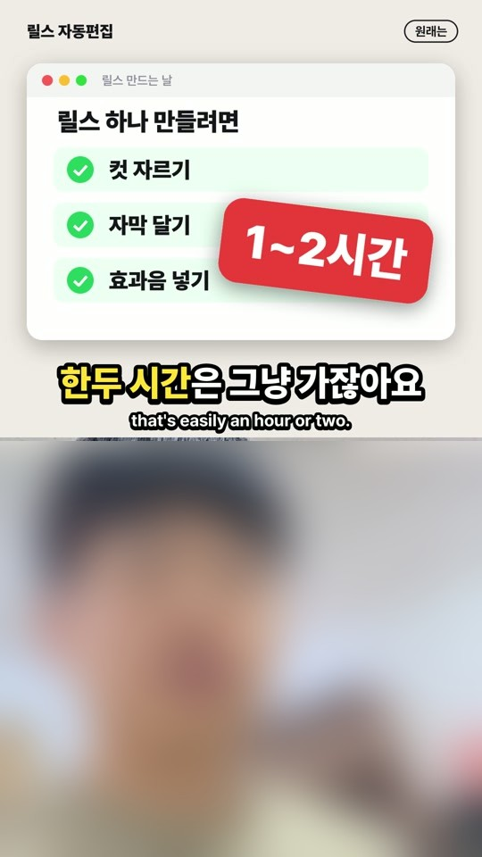
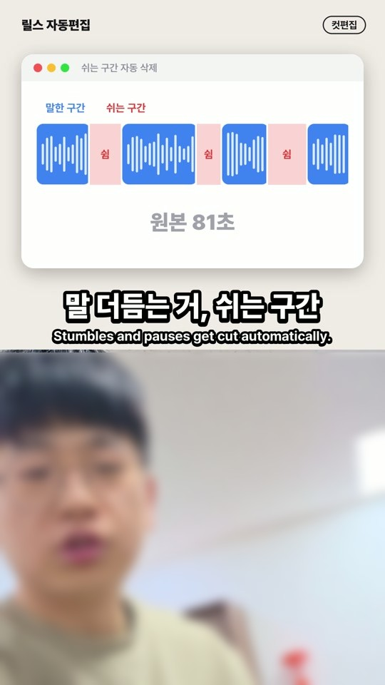

릴스 자동편집
사용법
영상 넣고
"릴스 만들어줘"
한마디면 끝
Claude Code가 쉬는 구간을 잘라내고,
자막 · 그래픽 · 효과음까지 넣어 줍니다.



위 화면은 이 키트로 만든 실제 릴스입니다.
github.com/keun4jang/reels-kit
Claude Code가 쉬는 구간을 잘라내고,
자막 · 그래픽 · 효과음까지 넣어 줍니다.


위 화면은 이 키트로 만든 실제 릴스입니다.
이미 Claude Code를 쓰고 있다면 이 쪽은 건너뛰세요.
인터넷 주소창에 위 주소를 치고, 내 컴퓨터(Windows 또는 Mac)에 맞는 버튼을 눌러 받은 파일을 실행하세요.
Claude Code는 유료 요금제(Pro 이상)에서만 쓸 수 있어요. 무료 계정이면 요금제를 올리라는 안내가 나옵니다.
바탕화면 빈 곳에서 마우스 오른쪽 버튼 → 새로 만들기 → 폴더 → 이름을 릴스로 적고 엔터.
(Mac은 오른쪽 버튼 → 새로운 폴더)
① 앱 왼쪽 위의 Code 를 누릅니다. (그림만 보이면 마우스를 올려 이름을 확인하세요)
② 글 쓰는 칸 바로 아래 줄에서 첫 번째 버튼을 눌러 Local 을 고릅니다.
③ 그 옆의 폴더 버튼을 눌러 Open folder… → 바탕화면의 릴스 폴더를 고릅니다.
이제 글 쓰는 칸에 말을 걸 수 있어요. 버튼 이름은 한글로 보일 수도 있습니다.
Claude가 필요한 도구를 알아서 설치합니다. 중간에 "허용할까요?"라고 물으면 허용을 누르세요. 5~10분쯤 걸립니다.
앱을 한 번 껐다가 다시 켜 주세요. (바탕화면에 "릴스" 폴더가 없었다면 이때 자동으로 생깁니다)
0단계에서 만든 그 폴더예요. 찍은 영상을 마우스로 끌어다 놓으면 됩니다.
0단계의 4번처럼 Code 화면으로 들어가면 됩니다. 폴더는 한 번 골라 두었으면 그대로예요.
1분짜리 영상 기준으로 5~10분쯤 걸립니다. 다 되면 "릴스" 폴더 안에 "완성" 폴더가 생기고, 그 안에 릴스가 들어 있어요.
돈이 더 드나요?
키트는 무료입니다. Claude Code 요금제의 사용량만 씁니다.
내 영상이 어디로 올라가나요?
아니요. 편집은 내 컴퓨터 안에서 합니다. 다만 받아쓴 글과 확인용 장면 몇 장은 Claude가 읽습니다.
결과가 매번 완벽한가요?
아닙니다. 자막 오타나 어색한 컷이 남을 수 있습니다. 올리기 전에 한 번 보고, 고칠 곳을 말로 알려 주세요.
"릴스 만들어줘"가 안 통해요.
Claude Code를 껐다 켠 뒤 다시 해 보세요. 그래도 안 되면 1단계 설치 문장을 한 번 더 붙여넣으세요.